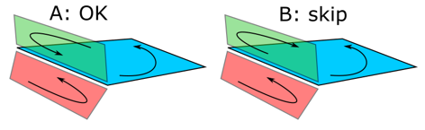
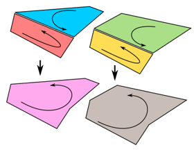

Точки на гранях можно объединять вместе для формирования более гладких поверхностей.
1.На вкладке Моделирование в группе Геометрия, щелкните стрелку Инструменты, а затем щелкните Объединить грани.
2.В трехмерном мире выберите набор геометрии.
3.В области задач Объединить грани, установите Чувствительность до нужного радиуса для обнаружения соседних точек, а затем нажмите Объединить.
Процесс включает в себя назначение значения допуска, которое определяет радиус точки на открытой кромке, чтобы найти и сопоставить себя с точкой на другой грани.

Два требования: края двух точек должны идти в противоположных направлениях друг от друга и принадлежать одному и тому же объекту.

Если ребро имеет более одного соседнего ребра, ребро будет пропущено, и грани не будут сливаться на этих ребрах. Как правило, этот процесс выполняется для очистки вырожденной и неоднородной геометрии, например, исправления трещин и отверстий на поверхностях.
